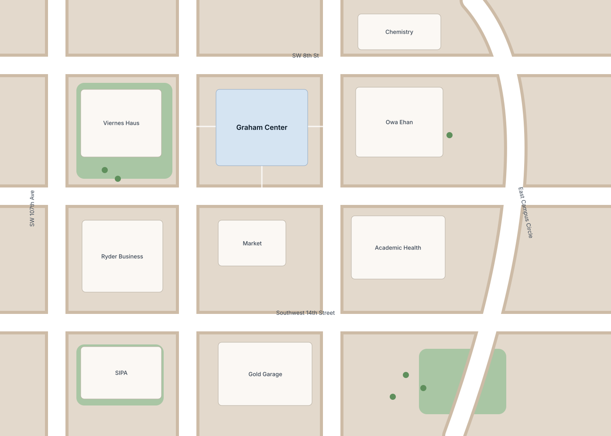
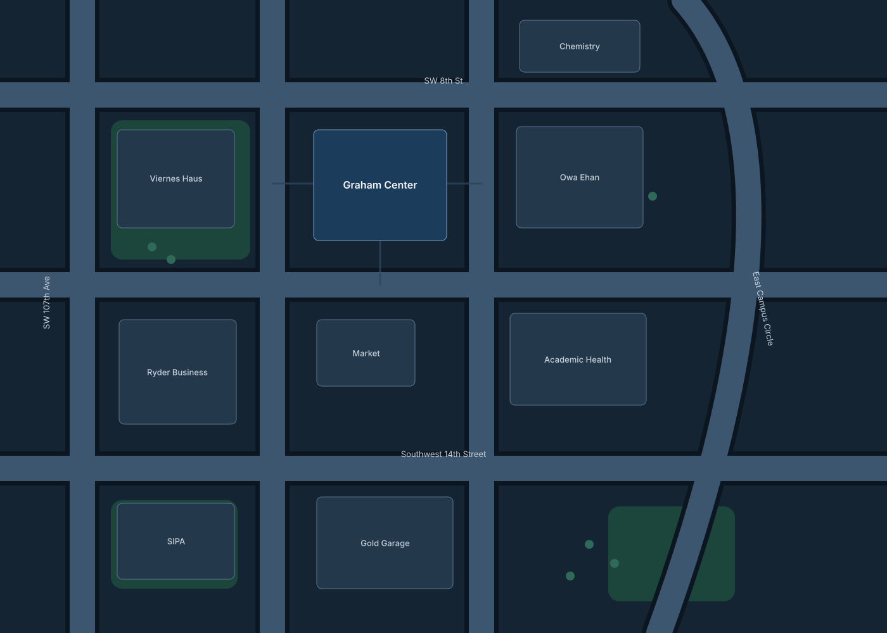

drop-off Sample
Sample hazard
Seeded for the demo, not a real report. Votes still count for the demo.
No photo was sent with this report


Sample
Southwest 14th Street
- Confidence
- 1.0
- Clearance
- Not measured
- Width left
- Not measured